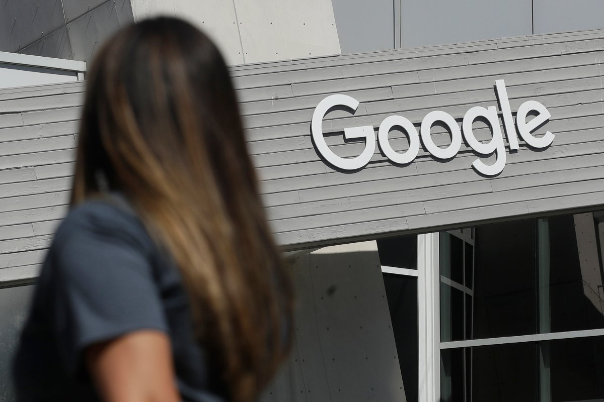

Toppforsker slutter i Google og advarer mot kunstig intelligens
ADVARER: En toppforsker hos giganten Google sa opp jobben. Nå kommer han med klar advarsel.

25. mars 2025
Hentet fra TEK.no
En av verdens fremste eksperter på kunstig intelligens (KI) frykter han har vært med på å utvikle teknologi som på sikt kan true menneskeheten.
Professor Geoffrey Hinton (75) har i en årrekke vært ansatt både ved Universitetet i Toronto og i Google.
Nå har han sagt opp stillingen i Google for å kunne snakke mer åpent om risiko knyttet til teknologien han har vært med på å utvikle: kunstig intelligens.
– Jeg synes ikke de bør oppskalere dette mer før de har forstått hvordan de kan kontrollere det, sier han i et intervju med The New York Times.
Til BBC sier han at såkalte tekstroboter snart kan bli mer intelligente enn mennesker.
Han peker på flere risikofaktorer: Spredning av desinformasjon, tap av arbeidsplasser, nye «autonome» våpen basert på KI og aktører som bruker teknologien til ondsinnede formål.
På sikt frykter han at kunstig intelligens kan utvikle uventet atferd og utgjøre en trussel mot menneskeheten.